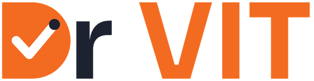

Siam edu.แอปบทที่ 12 การวิจัยผสานวิธี: บูรณาการ H12
ใช้คู่กับบทที่ 12 มีสามใบงาน: อ่านส่วนพรรณนาของ H12 ให้ถูกตัวหาร วางแผนโควตาผู้ให้สัมภาษณ์ และฝึกอ่านแถวของตารางบูรณาการ แล้วปิดด้วยแบบทดสอบ
ค่าตั้งต้นทุกค่ามาจากข้อมูลสังเคราะห์ในบทที่ 12 แก่นเรื่องเป็นข้อความแต่งเพื่อการสอน ห้ามนำข้อมูลผู้ตอบหรือบทสัมภาษณ์จริงมาใส่ในแอปนี้หรือในเครื่องมือ GenAI
ใบงาน 1 · LO2
ส่วนพรรณนาของ H12: ตัวหารต่างกัน ชนิดต่างกัน
ค่าตั้งต้นตรงกับตารางที่ 12.2 ปรับตัวเลขแล้วดูว่าแต่ละอัตราตอบคำถามอะไร
ใบงาน 2 · LO3
วางแผนโควตาผู้ให้สัมภาษณ์
ตัวเลขในตารางคือจำนวนผู้ยินดีให้สัมภาษณ์ในแต่ละช่องและกลุ่มโปรไฟล์ (ตารางที่ 12.5) แก้ตัวเลขหรือจำนวนขั้นต่ำต่อช่อง แล้วดูว่าช่องใดมีปัญหา
| ช่องโควตา | โปรไฟล์ต่ำ | โปรไฟล์สูง | สถานะ |
|---|
ใบงาน 3 · LO4
อ่านแถวของตารางบูรณาการ
แต่ละแถวมีตัวเลขและแก่นเรื่อง (ข้อมูลสังเคราะห์) เลือกว่าหลักฐานสองชนิด ยืนยัน ขยายความ หรือขัดแย้งกัน แล้วดูเหตุผล
ใบงาน 4 · LO1–LO5
แบบทดสอบท้ายบท
ตอบทีละข้อ คำอธิบายจะแสดงทันทีหลังเลือก